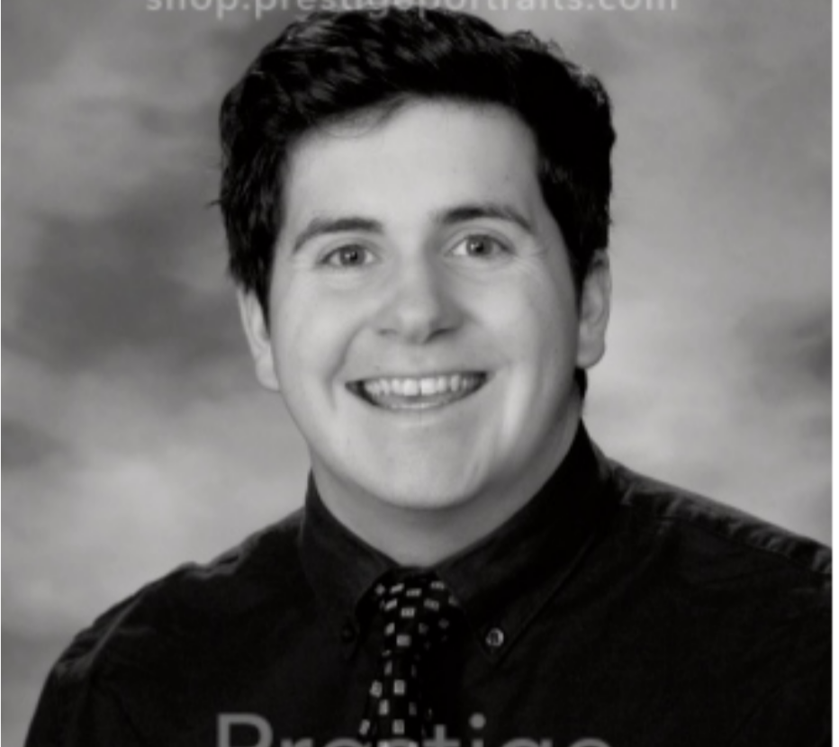
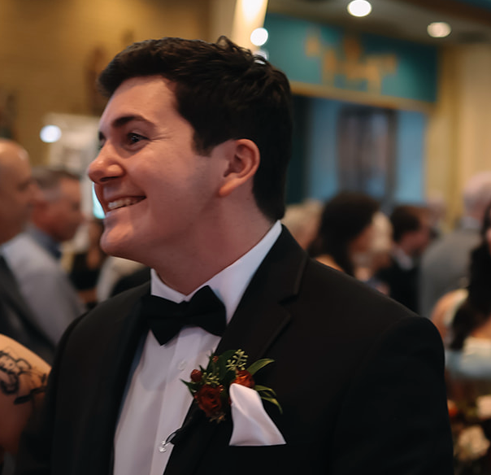

Evan Marino
Data Analyst/Programmer
evanmarino610@gmail.com
+1 856-203-0092
Hi, I’m Evan—a Computer Science graduate from Rowan University passionate about data, programming, and design. I enjoy analyzing data to uncover insights and building applications that are both functional and visually clean.
My experience includes working with Python, SQL, and Java, and I also create web and graphic designs on the side. I’m especially interested in roles where I can blend technical problem-solving with creativity and continue growing as a developer and data analyst.
| Age: | 22 |
| Location: | Blackwood, New Jersey |
| Degree: | Bachelors |
| Field: | Computer Science |
